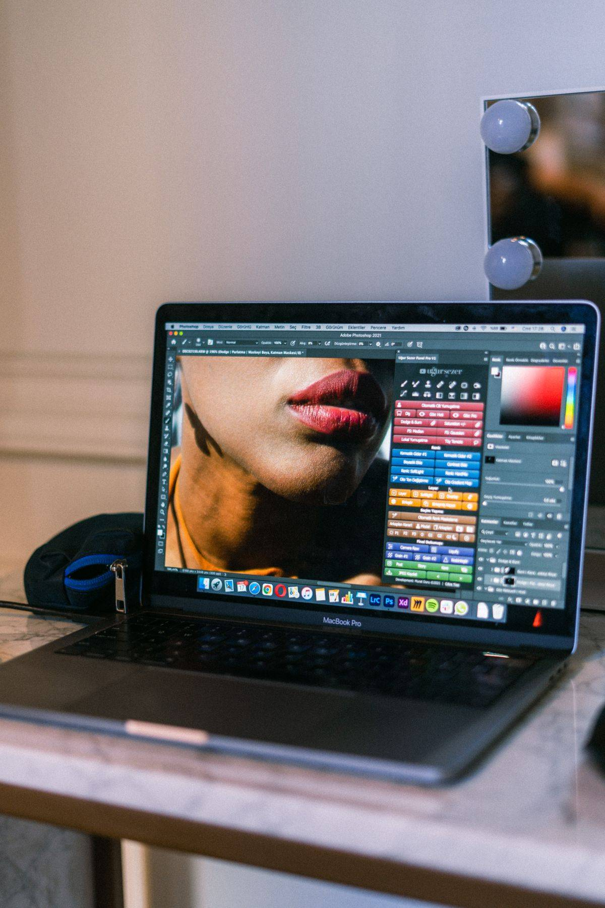
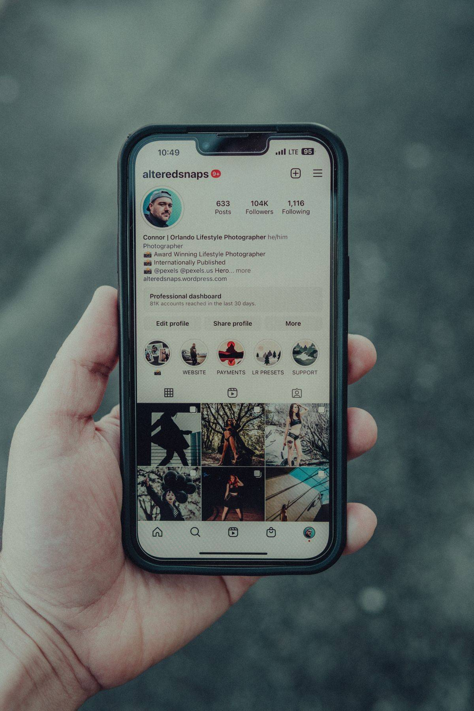
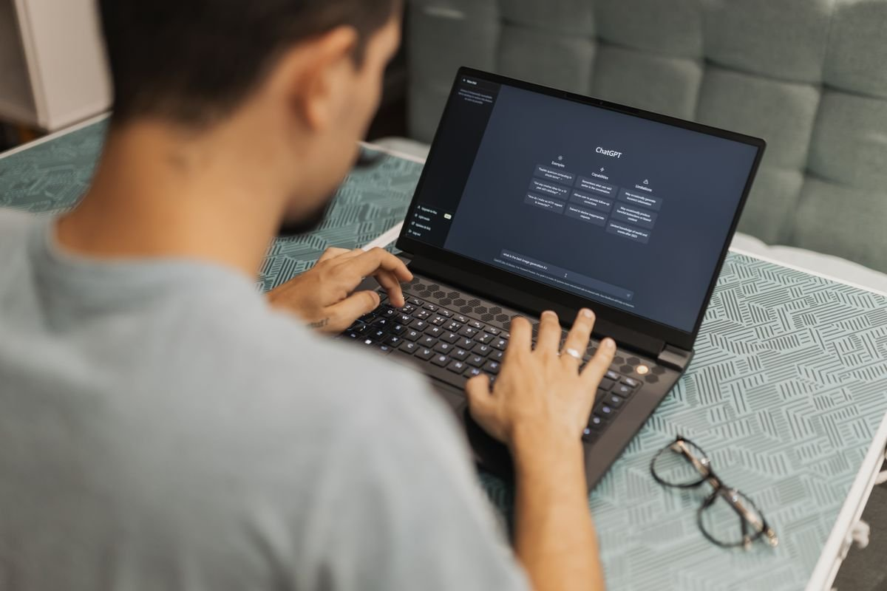

Mau desain seperti di Canva tapi tanpa langganan Pro? VistaCreate, Snappa, Desygner, Microsoft Designer, dan Kittl semuanya punya paket gratis yang bisa kamu pakai hari ini. Semuanya bekerja di browser dengan cara yang mirip Canva: pilih template, ganti teks dan gambar, lalu unduh hasilnya. Per November 2026, kelima paket gratis ini masih aktif menurut halaman harga masing-masing.
Canva sendiri punya paket gratis dengan 1,6 juta template lebih dan penyimpanan 5 GB, jadi alasan pindah bukan karena Canva tidak gratis. Alasan pindahnya adalah batas paket gratis Canva: hapus latar, ubah ukuran desain ke format lain, dan penjadwalan posting adalah fitur Pro, yang harganya sekitar 144 dolar AS setahun per orang. Kalau kebutuhanmu cuma satu dari fitur itu, pindah ke alat lain bisa lebih murah daripada langganan. VistaCreate paling longgar karena unduhannya tidak dibatasi. Snappa paling cepat untuk satu gambar, tapi unduhan gratisnya cuma tiga per bulan. Desygner cocok untuk tim kecil yang juga butuh alat PDF. Microsoft Designer cocok kalau kamu punya akun Microsoft dan suka desain dibantu AI. Kittl paling pas untuk logo dan kaos, tapi paket gratisnya hanya untuk keperluan pribadi. Artikel ini membandingkan batas tiap paket supaya kamu tidak salah pilih.
Kenapa cari alternatif kalau Canva juga gratis?
Karena paket gratis Canva memang sudah cukup untuk banyak orang, pindah hanya masuk akal kalau kamu mentok di satu batas tertentu. Tiga batas yang paling sering dikeluhkan adalah hapus latar, ubah ukuran, dan penjadwalan posting, ketiganya fitur Pro menurut halaman harga Canva. Kalau kamu cuma butuh satu fitur itu sesekali, alat gratis lain bisa menutupinya tanpa langganan. Kalau kamu butuh ketiganya setiap hari, langganan Pro mungkin tetap lebih praktis.
VistaCreate: paket gratis paling longgar
VistaCreate, dulu bernama Crello, adalah pengganti Canva yang paling mirip cara kerjanya. Paket gratisnya bernama Starter: tanpa batas waktu, tanpa kartu, untuk satu kursi. Isinya 100 ribu template lebih, lebih dari satu juta foto, video, dan vektor gratis, penyimpanan 10 GB, dan satu Brand Kit untuk warna dan logo usahamu. Unduhan desainnya tidak dibatasi, jadi kamu bisa mengunduh sebanyak yang kamu buat. Batasnya ada di fitur AI: hapus latar, hapus objek, dan ubah ukuran sekali klik hanya ada di paket Pro, yang harganya 10 dolar AS per bulan bila dibayar tahunan atau 13 dolar bila dibayar bulanan. Jadi VistaCreate paling cocok untuk postingan, flyer, atau presentasi rutin. Catatan: beberapa artikel menyebut hapus latar VistaCreate gratis, tapi pusat bantuan resminya menyatakan alat AI tidak termasuk di paket Starter.

Snappa dan Kittl: cepat untuk satu gambar, tapi ada batasnya
Snappa adalah pilihan paling sederhana di daftar ini. Paket gratisnya bernama Starter dan membuka seluruh pustaka template dan foto, lebih dari 6.000 template dan 5 juta foto HD dan grafis, tanpa kartu dan tanpa batas waktu. Editornya ramping, jadi kamu bisa selesai dalam hitungan menit. Tangkapannya cuma satu: unduhan gratis dibatasi tiga per bulan. Beberapa artikel menyebut lima unduhan, tapi halaman harga resminya menulis tiga, dan angka itu tidak berubah sejak 2019. Jadi Snappa cocok kalau kamu cuma butuh dua atau tiga gambar per bulan. Kalau lebih dari itu, paket Pro-nya 15 dolar AS per bulan atau 120 dolar per tahun.
Kittl beda arah: alat ini kuat untuk tipografi, logo, dan desain kaos. Paket gratisnya memberi lima proyek, penyimpanan 500 MB, ekspor PNG dan JPG sampai 800 piksel, dan 100 token AI sekali pakai. Hapus latar tersedia gratis di semua paket. Tapi ada dua batas penting: hasil gratis hanya untuk keperluan pribadi, jadi tidak boleh dijual atau dipakai untuk klien, dan ekspornya beresolusi rendah sehingga kurang cocok untuk cetak. Buat belajar bikin logo, Kittl bagus, tapi hasil jualannya butuh paket Pro.

Desygner dan Microsoft Designer: untuk kerja tim dan desain AI
Desygner cocok kalau kamu bekerja bareng orang lain. Paket gratisnya mencakup editor, pustaka template, brand kit, dan alat PDF, dengan batas sampai 100 proyek, penyimpanan 5 GB, dan 20 kredit AI per bulan, tanpa kartu dan tanpa masa percobaan. Kelebihannya adalah alat PDF-nya, yang bisa kamu pakai di browser tanpa bayar. Kekurangannya, batas 100 proyek cepat terasa kalau kamu menyimpan semua desain lama.
Microsoft Designer lain lagi jalurnya: alat ini gratis dipakai dengan akun Microsoft dan lisensinya untuk penggunaan pribadi, bukan komersial. Kamu menulis deskripsi, lalu AI membuatkan gambar, stiker, kartu, atau kolase, dan kamu bisa mengeditnya dengan alat potong, teks, dan ubah ukuran. Perlu diingat: halaman bantuan resminya menyatakan langganan mungkin diperlukan kalau kamu membuat desain lebih sering, jadi kuota AI gratisnya ada batas bulanan. Pilih alat ini kalau kamu punya akun Microsoft dan lebih suka mengetik perintah daripada menyusun template.

Mana yang sebaiknya kamu pilih?
Jawabannya tergantung seberapa sering kamu mendesain. Bikin postingan hampir tiap hari dan tidak butuh AI: VistaCreate, karena unduhannya tidak dibatasi. Cuma butuh satu atau dua gambar sebulan: Snappa, karena editornya paling cepat. Kerja bareng tim kecil dan sering mengurus PDF: Desygner. Suka desain dibantu AI dan sudah punya akun Microsoft: Microsoft Designer. Belajar bikin logo atau desain kaos untuk dipakai sendiri: Kittl, tapi jangan jual hasilnya sebelum naik ke paket berbayar. Coba satu alat seminggu dulu, karena pindah alat berarti membuat template dari nol.
Bonus: Affinity, aplikasi desktop gratis dari Canva sendiri
Buat naik kelas ke alat desain profesional, ada kabar segar: sejak 30 Oktober 2025, Canva menggabungkan Affinity Photo, Designer, dan Publisher menjadi satu aplikasi desktop bernama Affinity, gratis penuh. Kamu cukup masuk dengan akun Canva gratis, dan aplikasi ini berjalan di Mac dan Windows. Yang berbayar hanya fitur AI di dalamnya, yang butuh paket Canva berbayar. Affinity bukan pengganti Canva untuk postingan cepat, tapi untuk edit foto berlapis, ilustrasi vektor, dan tata letak majalah, ini alat gratis paling serius saat ini.
Intinya, tidak ada satu alat gratis yang mengalahkan Canva di semua hal, tapi ada alat gratis yang mengalahkan Canva di satu hal yang kamu butuhkan. Pilih berdasarkan batas paketnya, bukan namanya, dan cek lagi halaman harganya sebelum mendaftar.
Baca juga: Daftar artikel Other | Adobe Express gratis untuk poster dan video | Photopea, alternatif gratis Photoshop | Inkscape, alternatif gratis Adobe Illustrator | Artikel riset di blog Dolenthis
Sumber dan Info Resmi
Angka dan harga di artikel ini merujuk ke sumber berikut:
- SocialChamp: Canva gratis punya 1,6 juta template lebih dan penyimpanan 5 GB; hapus latar, ubah ukuran, dan penjadwalan posting adalah fitur Pro Canva; Desygner gratis sampai 100 proyek, 5 GB, 20 kredit AI per bulan, tanpa kartu; Kittl gratis hanya untuk penggunaan pribadi.
- Pusat bantuan VistaCreate: Starter gratis tanpa batas waktu, 1 kursi, 100 ribu template lebih, 1 juta foto, video, dan vektor lebih, 1 Brand Kit, 10 GB; Pro 10 dolar AS per bulan bila dibayar tahunan atau 13 dolar bila dibayar bulanan, sampai 10 anggota tim; alat AI hanya ada di Pro.
- Professionals Toolkit: VistaCreate Starter tanpa kartu, unduhan tidak dibatasi; hapus latar dan ubah ukuran hanya di Pro.
- Professionals Toolkit: Snappa Starter gratis, 6.000 template lebih, 5 juta foto HD dan grafis lebih, 3 unduhan per bulan, tanpa kartu; batas 3 unduhan tidak berubah sejak 2019; Pro 15 dolar AS per bulan atau 120 dolar per tahun.
- Professionals Toolkit: Kittl Free 5 proyek, 500 MB, ekspor PNG dan JPG sampai 800 piksel, 100 token AI sekali pakai, hapus latar gratis di semua paket, hanya untuk penggunaan pribadi.
- Dukungan Microsoft: Microsoft Designer gratis dipakai dengan akun Microsoft, lisensi penggunaan pribadi non-komersial; langganan mungkin diperlukan bila ingin membuat desain lebih sering.
- Phlearn: Affinity gratis penuh sejak 30 Oktober 2025 untuk Mac dan Windows, aktivasi dengan akun Canva gratis, fitur AI butuh paket Canva berbayar; Canva Pro 144 dolar AS setahun.
- XDA Developers: paket gratis Desygner mencakup editor, pustaka template, brand kit, dan alat PDF.
- Playyy.ai: Canva Pro 144 dolar AS per tahun per Oktober 2026.